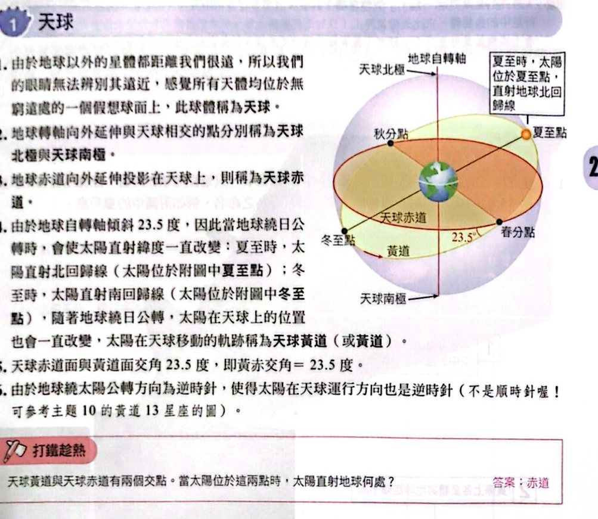
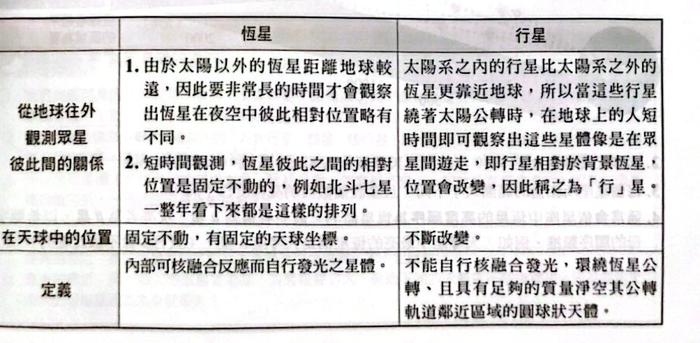
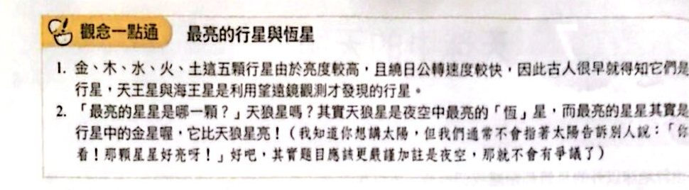
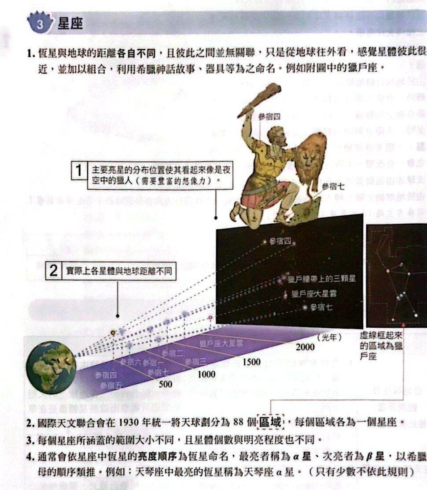
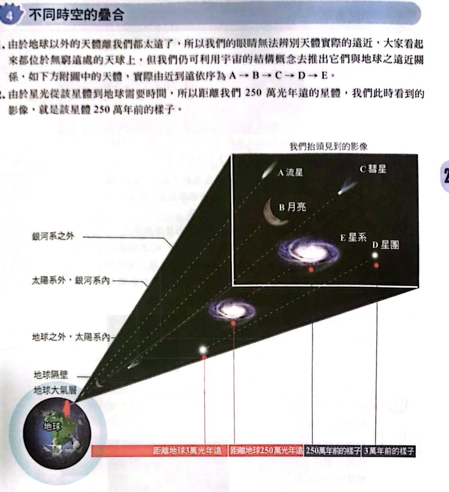

天球

天球、天球北極南極、天球赤道、黃道與黃赤交角（講義 p.39）
天球中的恆星與行星

恆星 vs 行星（講義 p.39）

觀念一點通：最亮的行星與恆星（講義 p.40）
星座

星座：獵戶座（講義 p.40）
不同時空的疊合

不同距離的天體（講義 p.41）
小試身手
看答案與詳解收起
答(B)(E)
解這題在考什麼：行星 PH1 在 4 個太陽（恆星）的系統中運轉，距離地球 5000 光年。
- (A) ✗ 太陽系只有一個太陽，PH1 繞四顆恆星，不屬於太陽系。
- (B) ○ 5000 光年的尺度小於銀河系直徑（約 10 萬光年），屬於銀河系。
- (C) ✗ 銀河系外的天體都是以星系為單位，看不到單一行星。
- (D) ✗ 行星不一定有衛星（水星、金星都沒有）。
- (E) ○ 光走 5000 光年，看到的是 5000 年前的情形。
看答案與詳解收起
答(C)
解這題在考什麼：光行時間（年）＝距離（光年）；兩星的距離不能直接相減（地球、織女、牛郎不一定在同一條直線）。
- (A) ✗ 恆星相對位置在一夜之內不會明顯靠近。
- (B) ✗ 織女星與牛郎星間的距離不能用 25 − 16＝9 光年計算（三者不在一直線）。
- (C) ○ 牛郎星距地球 16 光年，在牛郎星看地球，看到的是 16 年前的地球。
- (D) ✗ 在織女星上看到的地球是 25 年前的樣子，不是恐龍時代。
- (E) ✗ 同時從地球發射訊號，較近的牛郎星先接收。
看答案與詳解收起
答(C)(D)
解這題在考什麼：影像中的星系屬銀河系外；散布的恆星屬銀河系內。
- (A) ✗ 甲星系看起來較大，不代表實際較大（可能較近）。
- (B) ✗ 乙看起來較小，不一定離地球較遠（可能本身較小）。
- (C) ○ 圖面上散布的恆星都屬於銀河系。
- (D) ○ 甲、乙是星系，距離遠，不屬於銀河系。
- (E) ✗ 星座是天球上的區域，不是宇宙階級，不位於星系之上。
看答案與詳解收起
答(B)(C)
解這題在考什麼：宇宙階級的大小；星座是區域，不是階級。
- (A) ✗ 題文提到「后髮座超星系團」，所以最高階級是超星系團，不是星系團。
- (B) ○ 后髮座星系團（許多星系）比單一星系（銀河系）大。
- (C) ○ 星系團中星系可能彼此靠近，但每個星系都離銀河系很遠。
- (D) ✗ 獅子座與后髮座同屬后髮座超星系團，位置應相鄰，不是在地球兩側。
- (E) ✗ 后髮座超星系團是另一個超星系團，不包含本超星系團。
看答案與詳解收起
答(E) E 星
解這題在考什麼：行星在眾星間遊走，位置會改變；恆星彼此位置固定。兩張不同時日的照片中，E 星的位置移動了，其餘不動，所以 E 可能是行星。
看答案與詳解收起
答(B)
解這題在考什麼：恆星彼此距離遠，「星座形狀」是從地球往外看的投影。
- 火星離地球很近（相對於恆星），看到的北斗七星形狀與地球相同。
- 克卜勒 452B 距地球約 1400 光年，視角不同，七顆星距離各不相同，形狀就會改變。
所以「在火星相同、在克卜勒 452B 則不同」。
看答案與詳解收起
答(C)
解這題在考什麼：星系（一）、星雲（二）、球狀星團（三）。
- (A) ✗ 棒旋星系不一定是銀河系的影像（其他星系也可能是棒旋）。
- (B) ✗ 星雲是氣體與塵埃，不是由許多恆星聚集。
- (C) ○ 球狀星團的點點星光多由小質量、年老恆星構成，分布於銀暈。
- (D) ✗ 影像（一）是星系（銀河系外），不是離地球最近。
- (E) ✗ 星系（一）的尺度最大，不是影像（二）。